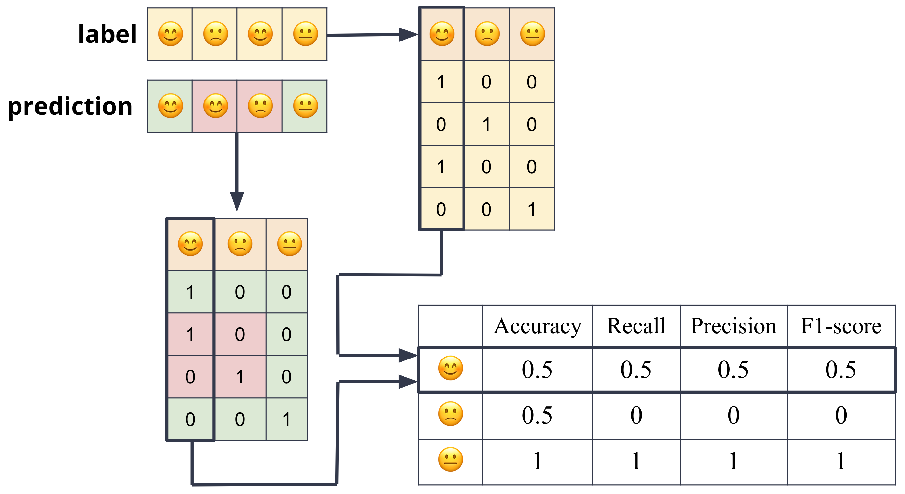

Classification lies at the heart of both human and machine intelligence. Deciding what letter, word, or image has been presented to our senses, recognizing faces or voices, sorting mail, assigning grades to homeworks; these are all examples of assigning a category to an input.
One method for classification is to use handwritten rules. There are many areas of data mining where handwritten rule-based classifiers constitute a state-of-the-art system, or at least part of it. Rules can be fragile, however, as situations or data change over time, and for some tasks humans aren’t necessarily good at coming up with the rules. Most cases of classification therefore are instead done via supervised machine learning.
The discrete output variable \(\mathcal{y}\) is often also called the label or target or class.
For example, we might want to predict whether a patient has a disease or not, based on their symptoms. In this case, \(\mathcal{y}\) is a binary variable, taking the value 1 if the patient has the disease, and 0 otherwise. Other examples of classification problems include predicting the sentiment of a movie review: positive, negative, or neutral.
For example,
In other words, the classification problem is to learn a function \(f\) that maps the input \(\mathcal{X}\) to the discrete output \(\mathcal{Y}\).
Evaluation Metrics
The most common metric for evaluating a classifier is accuracy. Accuracy is the proportion of correct predictions. It is the number of correct predictions divided by the total number of predictions.
\[Accuracy = \frac{\text{Number of correct predictions}}{\text{Total number of predictions}}\]
For example, if we have a test set of 100 documents, and our classifier correctly predicts the class of 80 of them, then the accuracy is 80%.
Accuracy is a good metric when the classes are balanced\(N_{class1} \approx N_{class2}\). However, when the classes are imbalanced, accuracy can be misleading. For example, if we have a test set of 100 documents, and 95 of them are positive and 5 of them are negative, then a classifier that always predicts positive will have an accuracy of 95%. However, this classifier is not useful, because it never predicts negative.
Multi-class classification as multiple Binary classifications
Every multi-class classification problem can be decomposed into multiple binary classification problems. For example, if we have a multi-class classification problem with 3 classes, we can decompose it into 3 binary classification problems.

Assuming the categorical variable that we are trying to predict is binary, we can define the accuracy in terms of the four possible outcomes of a binary classifier:
True Positive (TP): The classifier correctly predicted the positive class.
False Positive (FP): The classifier incorrectly predicted the negative class as positive.
True Negative (TN): The classifier correctly predicted the negative class.
False Negative (FN): The classifier incorrectly predicted the positive class as negative.
True positive means that the classifier correctly predicted the positive class. False positive means that the classifier incorrectly predicted the positive class. True negative means that the classifier correctly predicted the negative class. False negative means that the classifier incorrectly predicted the negative class.
These definitions are summarized in the table below:
Prediction \(\hat{y} = f'(x)\)
Truth \(y = f(x)\)
True Negative (TN)
0
0
False Negative (FN)
0
1
False Positive (FP)
1
0
True Positive (TP)
1
1
In terms of the four outcomes above, the accuracy is:
Accuracy is a useful metric, but it can be misleading.
Other metrics that are often used to evaluate classifiers are:
Precision: The proportion of positive predictions that are correct. Mathematically, it is defined as:
\[\text{Precision} = \frac{TP}{TP + FP}\]
Recall: The proportion of positive instances that are correctly predicted. Mathematically, it is defined as:
\[\text{Recall} = \frac{TP}{TP + FN}\]
The precision and recall are often combined into a single metric called the F1 score. The F1 score is the harmonic mean of precision and recall. The harmonic mean of two numbers is given by:
F1 Score: The harmonic mean of precision and recall.
Many kinds of machine learning algorithms are used to build classifiers. Two common classifiers are Naive Bayes and Logistic Regression.
These exemplify two primary category of models for doing classification:
Generative models like naive Bayes build a model of how a class could generate some input data. Given an observation, they return the class most likely to have generated the observation.
Discriminative models like logistic regression instead learn what features from the input are most useful to discriminate between the different possible classes.
While discriminative systems are often more accurate and hence more commonly used, generative classifiers still have a role. They can be more robust to missing data, and can be used to generate synthetic data.
Code Example
The code below shows how to train a Nearest Neighbor classifier on the Iris dataset. The Iris dataset is a dataset of 150 observations of iris flowers. There are 3 classes of iris flowers: setosa, versicolor, and virginica. For each observation, there are 4 features: sepal length, sepal width, petal length, and petal width. The goal is to predict the class of iris flower given the 4 features.
The code below uses the scikit-learn library to train a Nearest Neighbor classifier on the Iris dataset. The Nearest Neighbor classifier is a simple classifier that works by finding the training observation that is closest to the test observation, and predicting the class of the closest training observation. The Nearest Neighbor classifier is a discriminative classifier.
There are 5 steps shown in the code below:
Import the dataset: The Iris dataset is included in scikit-learn. We import it using the load_iris function.
Split the dataset into training and test sets: We split the dataset into a training set and a test set. The training set is used to train the classifier, and the test set is used to evaluate the classifier.
Instantiate the classifier: We instantiate the classifier using the KNeighborsClassifier class.
Train the classifier: We train the classifier using the fit method.
Make predictions: We make predictions on the test set using the predict method.
Print the classification report: We evaluate the classifier using the classification_report function.
from sklearn.datasets import load_irisfrom sklearn.model_selection import train_test_splitfrom sklearn.neighbors import KNeighborsClassifierfrom sklearn.metrics import classification_report# 1. Load the datadata = load_iris(as_frame=True)X = data['data']y = data['target']# 2. Create a train/test splitX_train, X_test, y_train, y_test = train_test_split(X, y, test_size=0.2)# 3. Instantiate a modelmodel = KNeighborsClassifier()# 4. Fit a modelmodel.fit(X_train, y_train)# 5. Predict on the test setpreds = model.predict(X_test)# 6. Print classification reportprint(classification_report(y_test, preds))